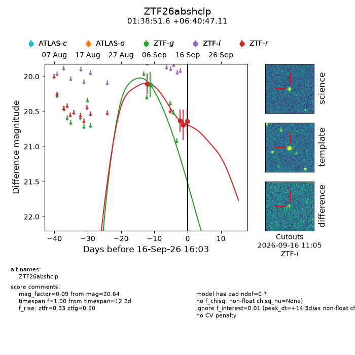
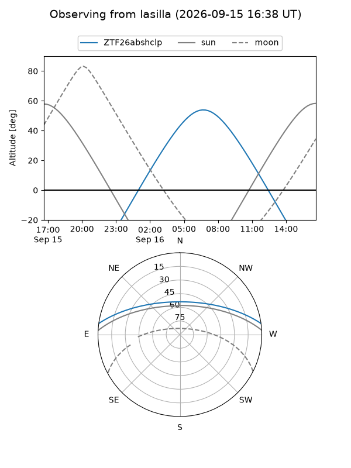
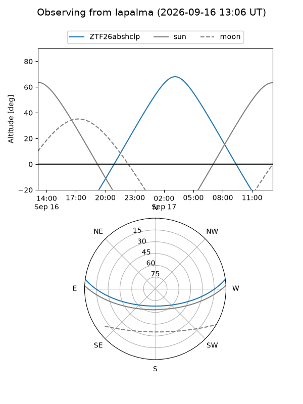
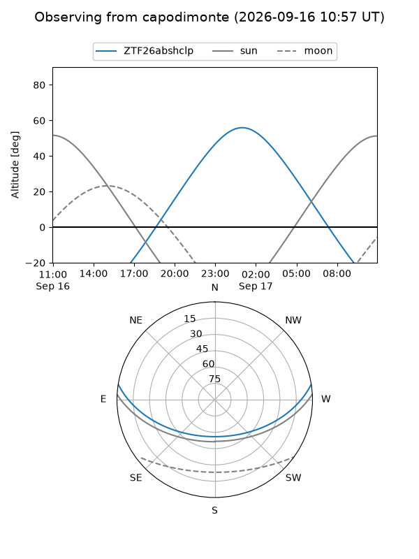
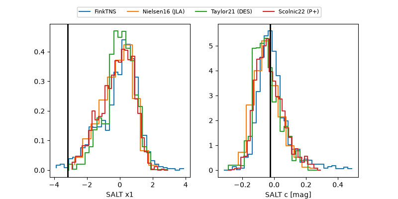

ZTF26abshclp
Target ZTF26abshclp at 2026-09-16 16:05
Aliases and brokers:
FINK-ZTF: ztf.fink-portal.org/ZTF26abshclp
Lasair-ZTF: lasair-ztf.lsst.ac.uk/objects/ZTF26abshclp
ALeRCE-ZTF: alerce.online/object/ZTF26abshclp
Direct TNS query: direct search
alt names
ZTF26abshclp (ztf,fink_ztf)
Coordinates:
equatorial (ra, dec) = 24.7151,+6.67975
equatorial (HMS+DMS) = 01:38:51.63,+06:40:47.11
galactic (l, b) = (143.3979,-54.29677)
Flags:
peak dt: +14.3
Photometry:
last ztfg=20.12, ztfr=20.64
1 ztfg, 4 ztfr detections
Lightcurve

Visibility



Additional plots
